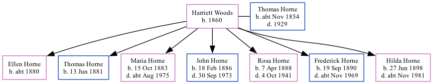

Harriett Horne (née Woods) 1860 - [ Home ] | [ Calendar ] | [ Surnames Index ] | [ Family History ]Harriett Woods , the wife of Thomas Warner Horne (the great-great-uncle of Nigel Horne ), was born in Cobham, Surrey, England in 18601 and married Thomas (a brewer's drayman with whom she had 7 children: Ellen , Thomas William , Maria Annie , John Christopher , Rosa Emily , Frederick Sidney and Hilda Alice ) in St Pancras, London, England around Nov 18782 .
Throughout her life, she lived at Derby Buildings, Britannia Street in St Pancras on Apr 3, 18813 , on Mar 31, 19014 , on Apr 2, 19115 and on Jun 19, 19211 .
Children Ellen was born c. 1880Thomas William was born on Jun 13, 1881Maria Annie was born on Oct 15, 1883John Christopher was born on Feb 18, 1886Rosa Emily was born on Apr 7, 1888Frederick Sidney was born on Sep 19, 1890Hilda Alice was born on Jun 27, 1898Citations 1921 Census Of England & Wales - Findmypast (was age 61 and the wife of the head of the household) England & Wales Marriages 1837-2005 - Findmypast 1881 England, Wales & Scotland Census - Findmypast (was age 20 and the wife of the head of the household) 1901 England, Wales & Scotland Census - Findmypast (was age 40 and the wife of the head of the household) 1911 Census for England & Wales - Findmypast (was age 50 and the wife of the head of the household) Family Tree Map
Generated by Ged2Site . Last updated on Apr 1, 2025